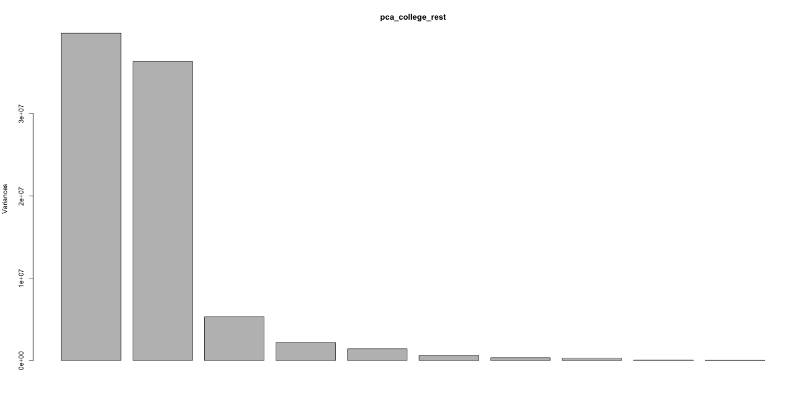
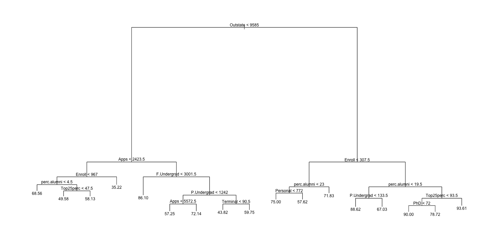
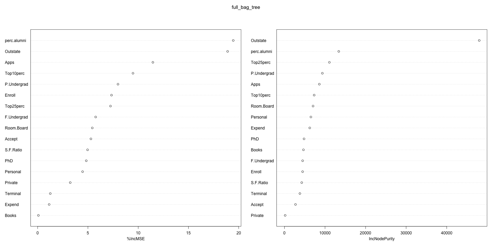
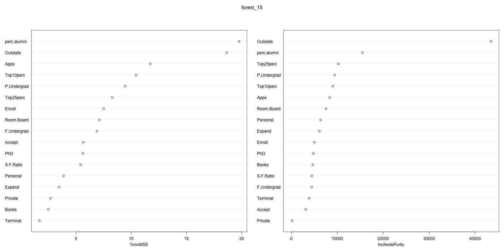
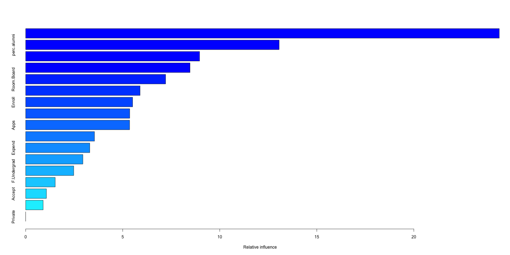

# setwd("~/Google Drive (xukun.liu@rhsmith.umd.edu)/RHSmith-Sync/2-Spring-2019/2-BUDT 758T (0503)/Assignment/Assignment#6") library(readr) dt <- read_csv('college.csv')
## Warning: Missing column names filled in: 'X1' [1]
# View(dt) dt$Private = as.factor(dt$Private) str(dt)
## Classes 'spec_tbl_df', 'tbl_df', 'tbl' and 'data.frame': 777 obs. of 19 variables: ## $ X1 : chr "Abilene Christian University" "Adelphi University" "Adrian College" "Agnes Scott College" ... ## $ Private : Factor w/ 2 levels "No","Yes": 2 2 2 2 2 2 2 2 2 2 ... ## $ Apps : num 1660 2186 1428 417 193 ... ## $ Accept : num 1232 1924 1097 349 146 ... ## $ Enroll : num 721 512 336 137 55 158 103 489 227 172 ... ## $ Top10perc : num 23 16 22 60 16 38 17 37 30 21 ... ## $ Top25perc : num 52 29 50 89 44 62 45 68 63 44 ... ## $ F.Undergrad: num 2885 2683 1036 510 249 ... ## $ P.Undergrad: num 537 1227 99 63 869 ... ## $ Outstate : num 7440 12280 11250 12960 7560 ... ## $ Room.Board : num 3300 6450 3750 5450 4120 ... ## $ Books : num 450 750 400 450 800 500 500 450 300 660 ... ## $ Personal : num 2200 1500 1165 875 1500 ... ## $ PhD : num 70 29 53 92 76 67 90 89 79 40 ... ## $ Terminal : num 78 30 66 97 72 73 93 100 84 41 ... ## $ S.F.Ratio : num 18.1 12.2 12.9 7.7 11.9 9.4 11.5 13.7 11.3 11.5 ... ## $ perc.alumni: num 12 16 30 37 2 11 26 37 23 15 ... ## $ Expend : num 7041 10527 8735 19016 10922 ... ## $ Grad.Rate : num 60 56 54 59 15 55 63 73 80 52 ... ## - attr(*, "spec")= ## .. cols( ## .. X1 = col_character(), ## .. Private = col_character(), ## .. Apps = col_double(), ## .. Accept = col_double(), ## .. Enroll = col_double(), ## .. Top10perc = col_double(), ## .. Top25perc = col_double(), ## .. F.Undergrad = col_double(), ## .. P.Undergrad = col_double(), ## .. Outstate = col_double(), ## .. Room.Board = col_double(), ## .. Books = col_double(), ## .. Personal = col_double(), ## .. PhD = col_double(), ## .. Terminal = col_double(), ## .. S.F.Ratio = col_double(), ## .. perc.alumni = col_double(), ## .. Expend = col_double(), ## .. Grad.Rate = col_double() ## .. )
# b. Set the seed to 91101. set.seed(91101) # c. Randomly partition the data set in the following order (note that if you do not follow this order, many of the questions in this assignment will not make sense to you!): # i. Split 35% of the observations in the full data set to use as testing data. # Using these observations, create a testing data set called college_test. test_index = sample(nrow(dt),nrow(dt)*0.35) college_test = dt[test_index,] # ii. Save the remaining 65% of the data as college_rest. college_rest = dt[-test_index,] # 1. (25 points) Principal Components Analysis # a. Using the college_rest data, run a PCA on all numeric X variables # (so you should exclude the name of the college, Private, and Grad.Rate, since graduation rate is the main goal of the analysis; it will be the Y variable). colnames(dt)
## [1] "X1" "Private" "Apps" "Accept" "Enroll" ## [6] "Top10perc" "Top25perc" "F.Undergrad" "P.Undergrad" "Outstate" ## [11] "Room.Board" "Books" "Personal" "PhD" "Terminal" ## [16] "S.F.Ratio" "perc.alumni" "Expend" "Grad.Rate"
pca_list = c("Apps","Accept","Enroll","Top10perc","Top25perc","F.Undergrad","P.Undergrad","Outstate","Room.Board","Books","Personal","PhD","Terminal","S.F.Ratio","perc.alumni","Expend") pca_college_rest = prcomp(college_rest[,pca_list]) summary(pca_college_rest)
## Importance of components: ## PC1 PC2 PC3 PC4 PC5 ## Standard deviation 6306.2829 6028.0371 2.305e+03 1.475e+03 1.193e+03 ## Proportion of Variance 0.4607 0.4209 6.156e-02 2.521e-02 1.648e-02 ## Cumulative Proportion 0.4607 0.8816 9.432e-01 9.684e-01 9.849e-01 ## PC6 PC7 PC8 PC9 PC10 ## Standard deviation 782.6117 575.67084 545.28332 196.22606 159.48834 ## Proportion of Variance 0.0071 0.00384 0.00344 0.00045 0.00029 ## Cumulative Proportion 0.9920 0.99581 0.99925 0.99970 0.99999 ## PC11 PC12 PC13 PC14 PC15 PC16 ## Standard deviation 19.93 14.06 9.32 6.17 5.257 2.899 ## Proportion of Variance 0.00 0.00 0.00 0.00 0.000 0.000 ## Cumulative Proportion 1.00 1.00 1.00 1.00 1.000 1.000
# b. Plot the results of your PCA analysis. How many principal components would you suggest we use for this data? pca_college_rest$sdev
## [1] 6306.282904 6028.037078 2305.303216 1475.090842 1192.867271 ## [6] 782.611700 575.670839 545.283324 196.226058 159.488342 ## [11] 19.925923 14.055729 9.319623 6.169932 5.256921 ## [16] 2.899220
plot(pca_college_rest)

# I would suggest 2 components. As we could see starts from PC3, Proportion of Variance is very low PC2 = pca_college_rest$x[,c(1,2)] # ?????????????????????????????? # pc2 # pc3 # c. Run two linear regressions: # (1) a standard linear regression using the same variables as you used for the PCA (that is, predict graduation rate using the numeric X variables from part (a)), and # (2) a principal components linear regression using the number of principal components you chose in part (b). lm_college_rest = lm(Grad.Rate~.-X1-Private,data = college_rest) pc_college_rest = lm(college_rest$Grad.Rate~PC2) # i. Report either the adjusted 𝑅2 or the AIC for both models. summary(lm_college_rest)
## ## Call: ## lm(formula = Grad.Rate ~ . - X1 - Private, data = college_rest) ## ## Residuals: ## Min 1Q Median 3Q Max ## -50.689 -6.876 -0.634 6.528 48.248 ## ## Coefficients: ## Estimate Std. Error t value Pr(>|t|) ## (Intercept) 44.8446497 5.6735877 7.904 1.80e-14 *** ## Apps 0.0014274 0.0005705 2.502 0.01268 * ## Accept 0.0014235 0.0011456 1.242 0.21465 ## Enroll -0.0017523 0.0028899 -0.606 0.54456 ## Top10perc 0.1105948 0.0902609 1.225 0.22106 ## Top25perc 0.1168351 0.0667837 1.749 0.08084 . ## F.Undergrad -0.0008477 0.0004682 -1.811 0.07082 . ## P.Undergrad -0.0011843 0.0004532 -2.613 0.00925 ** ## Outstate 0.0007996 0.0002828 2.827 0.00489 ** ## Room.Board 0.0020067 0.0007374 2.721 0.00673 ** ## Books -0.0061737 0.0036367 -1.698 0.09022 . ## Personal -0.0018807 0.0010384 -1.811 0.07074 . ## PhD 0.0795716 0.0684157 1.163 0.24537 ## Terminal -0.1384457 0.0726835 -1.905 0.05740 . ## S.F.Ratio 0.0022882 0.1948283 0.012 0.99063 ## perc.alumni 0.3315877 0.0606856 5.464 7.43e-08 *** ## Expend -0.0004210 0.0002141 -1.966 0.04981 * ## --- ## Signif. codes: 0 '***' 0.001 '**' 0.01 '*' 0.05 '.' 0.1 ' ' 1 ## ## Residual standard error: 12.72 on 489 degrees of freedom ## Multiple R-squared: 0.4745, Adjusted R-squared: 0.4573 ## F-statistic: 27.59 on 16 and 489 DF, p-value: < 2.2e-16
summary(pc_college_rest)
## ## Call: ## lm(formula = college_rest$Grad.Rate ~ PC2) ## ## Residuals: ## Min 1Q Median 3Q Max ## -45.849 -9.398 0.525 8.547 54.857 ## ## Coefficients: ## Estimate Std. Error t value Pr(>|t|) ## (Intercept) 65.5889328 0.6538662 100.309 < 2e-16 *** ## PC2PC1 0.0013337 0.0001038 12.850 < 2e-16 *** ## PC2PC2 -0.0005687 0.0001086 -5.238 2.39e-07 *** ## --- ## Signif. codes: 0 '***' 0.001 '**' 0.01 '*' 0.05 '.' 0.1 ' ' 1 ## ## Residual standard error: 14.71 on 503 degrees of freedom ## Multiple R-squared: 0.2768, Adjusted R-squared: 0.274 ## F-statistic: 96.28 on 2 and 503 DF, p-value: < 2.2e-16
# ii. Which model appears to be better given the adjusted 𝑅2 or AIC results? # Does this surprise you? # Our full model has better Ajusted R2. Not superise, PCA will miss some infomation # iii. Which of the two models is better for inference? Would your answer potentially change if the values of adjusted 𝑅2 or AIC changed? Explain. # our full model will have better inference and will not change even if PCA model has better AIC or Adj R2. Because PCA is using another value to represent the original multi-variables, we could not get much inference from PCA models. # 2. (15 points) Bootstrap Sample (Single Tree) # a. Create a single bootstrapped sample from the college_rest data. num_rest = nrow(college_rest) single_bootstrap_sample_index=sample(seq(1,num_rest),num_rest,replace=TRUE) # b. Using your single sample, run a single tree to predict Grad.Rate using all other variables except the name of the college. # Is this a bagged tree or a random forest (of size 1)? library(tree) single_bag_tree = tree(Grad.Rate~.,data = college_rest[single_bootstrap_sample_index,-1]) # c. Plot your single tree. Does this appear to be a useful tree? Explain. summary(single_bag_tree)
## ## Regression tree: ## tree(formula = Grad.Rate ~ ., data = college_rest[single_bootstrap_sample_index, ## -1]) ## Variables actually used in tree construction: ## [1] "Outstate" "Apps" "Enroll" "perc.alumni" "Top25perc" ## [6] "F.Undergrad" "P.Undergrad" "Terminal" "Personal" "PhD" ## Number of terminal nodes: 17 ## Residual mean deviance: 112 = 54760 / 489 ## Distribution of residuals: ## Min. 1st Qu. Median Mean 3rd Qu. Max. ## -40.1000 -5.6210 0.2755 0.0000 5.9670 42.4200
plot(single_bag_tree) text(single_bag_tree,pretty=1)

# d. Use your single tree to predict Grad.Rate for the college_test data. What is the RMSE for your predictions? pred_single_bag_tree = predict(single_bag_tree,college_test) library(Metrics) rmse(pred_single_bag_tree,college_test$Grad.Rate)
## [1] 15.27547
# 3. (15 points) Bagging: Use your college_rest data to run a bagging procedure for 200 regression trees, # again using Grad.Rate as the dependent variable and all other variables except the name of the college as independent variables. library(randomForest)
full_bag_tree = randomForest(Grad.Rate~.,data=college_rest[,-1],ntree=200,mtry=ncol(college_rest)-2,importance=TRUE) # a. Report the Variable Importance Plot for your bagging procedure. Given your single tree from Question 2, do the results surprise you? Why or why not? full_bag_tree
## ## Call: ## randomForest(formula = Grad.Rate ~ ., data = college_rest[, -1], ntree = 200, mtry = ncol(college_rest) - 2, importance = TRUE) ## Type of random forest: regression ## Number of trees: 200 ## No. of variables tried at each split: 17 ## ## Mean of squared residuals: 178.8919 ## % Var explained: 39.84
importance(full_bag_tree)
## %IncMSE IncNodePurity ## Private 3.24739166 187.387 ## Apps 11.46479692 8615.772 ## Accept 5.29968752 2736.092 ## Enroll 7.34990103 4490.213 ## Top10perc 9.48106054 7336.106 ## Top25perc 7.24828182 11083.012 ## F.Undergrad 5.77408965 4494.951 ## P.Undergrad 7.99159434 9356.281 ## Outstate 18.89508167 48023.456 ## Room.Board 5.43680522 7055.448 ## Books 0.08097987 4684.115 ## Personal 4.47580190 6525.097 ## PhD 4.84137965 4835.927 ## Terminal 1.26246311 3817.236 ## S.F.Ratio 4.96778042 4265.376 ## perc.alumni 19.45905552 13395.247 ## Expend 1.15109680 6245.959
varImpPlot(full_bag_tree)

# b. Use your bagging results to predict Grad.Rate on the training data. Report your training RMSE. pred_full_bag_tree_train = predict(full_bag_tree,college_rest) rmse(pred_full_bag_tree_train,college_rest$Grad.Rate)
## [1] 5.422144
# c. Use your bagging results to predict Grad.Rate on the test data. pred_full_bag_tree_test = predict(full_bag_tree,college_test) # i. Report your test data RMSE. rmse(pred_full_bag_tree_test,college_test$Grad.Rate)
## [1] 12.58911
# ii. Does there appear to be overfitting happening? Support your answer. # iii. Does bagging appear to show improvement over the single tree? # yes, the rmse of bagging is lower than the rmse form single tree. # 4. (15 points) Random Forest: Use your training data to run a random forest procedure for 200 regression trees using 4 random variables per split, again using Grad.Rate as the dependent variable and all other variables except the name of the college as independent variables. forest_4 = randomForest(Grad.Rate~.,data=college_rest[,-1],ntree=200,mtry=4,importance=TRUE) # a. Report the Variable Importance Plot for your random forest procedure. Does it appear that any of the variables in the data set is significantly affecting our results more than the others? Support your answer. forest_4
## ## Call: ## randomForest(formula = Grad.Rate ~ ., data = college_rest[, -1], ntree = 200, mtry = 4, importance = TRUE) ## Type of random forest: regression ## Number of trees: 200 ## No. of variables tried at each split: 4 ## ## Mean of squared residuals: 172.864 ## % Var explained: 41.87
importance(forest_4)
## %IncMSE IncNodePurity ## Private 4.740209 1586.546 ## Apps 8.939705 7431.209 ## Accept 5.981612 4935.755 ## Enroll 7.460489 5877.441 ## Top10perc 10.385896 12253.225 ## Top25perc 9.096059 11003.905 ## F.Undergrad 5.757738 5612.147 ## P.Undergrad 8.536289 7981.836 ## Outstate 13.053696 21853.930 ## Room.Board 5.969355 11897.502 ## Books 2.398997 4290.899 ## Personal 4.825412 7761.786 ## PhD 4.993695 6138.621 ## Terminal 2.760772 4855.921 ## S.F.Ratio 5.979799 4912.034 ## perc.alumni 13.812179 15948.622 ## Expend 5.859166 9938.003
varImpPlot(forest_4)

# b. If we increase the number of variables per split from 4 to 15, would you expect the Variable Importance Plot to change? Support your answer. # Would Not change much forest_15 = randomForest(Grad.Rate~.,data=college_rest[,-1],ntree=200,mtry=15,importance=TRUE) forest_15
## ## Call: ## randomForest(formula = Grad.Rate ~ ., data = college_rest[, -1], ntree = 200, mtry = 15, importance = TRUE) ## Type of random forest: regression ## Number of trees: 200 ## No. of variables tried at each split: 15 ## ## Mean of squared residuals: 177.4517 ## % Var explained: 40.33
importance(forest_15)
## %IncMSE IncNodePurity ## Private 2.705732 162.0276 ## Apps 11.731200 8350.9190 ## Accept 5.662860 3136.9308 ## Enroll 7.499458 5010.6055 ## Top10perc 10.448910 9075.8409 ## Top25perc 8.288689 10232.4129 ## F.Undergrad 6.894361 4415.2033 ## P.Undergrad 9.458150 9405.6046 ## Outstate 18.643319 43457.4815 ## Room.Board 7.108920 7521.4529 ## Books 2.493378 4685.6444 ## Personal 3.877283 6369.5775 ## PhD 5.629452 4793.6968 ## Terminal 1.682300 3875.7895 ## S.F.Ratio 5.423891 4426.5047 ## perc.alumni 19.747486 15458.1161 ## Expend 3.468147 6095.1269
varImpPlot(forest_15) # c. Use your random forest results to predict Grad.Rate for the test data. What is your RMSE here? Does random forest appear to be a better option than bagging for this problem? pred_forest_4 = predict(forest_4,college_test) rmse(pred_forest_4,college_test$Grad.Rate)
## [1] 12.52787
# 5. (15 points) Boosting: Use your training data to run a boosting procedure using GBM for 200 regression trees, again using Grad.Rate as the dependent variable and all other variables except the name of the college as independent variables. Note that Grad.Rate is a continuous, numeric variable; your distribution should be normal (gaussian)! library(gbm)

boosting=gbm(Grad.Rate~.,data=college_rest[,-1],distribution="gaussian",n.trees=200) # a. Report the Relative Influence Plot for your boosting procedure. summary(boosting)

## var rel.inf ## Outstate Outstate 24.4011514 ## perc.alumni perc.alumni 13.0588411 ## Top10perc Top10perc 8.9621681 ## Top25perc Top25perc 8.4684898 ## Room.Board Room.Board 7.2115579 ## P.Undergrad P.Undergrad 5.8956439 ## Enroll Enroll 5.5106086 ## Personal Personal 5.3614725 ## Apps Apps 5.3563761 ## Terminal Terminal 3.5469306 ## Expend Expend 3.3052910 ## Books Books 2.9487046 ## F.Undergrad F.Undergrad 2.4767172 ## PhD PhD 1.5236917 ## Accept Accept 1.0709817 ## S.F.Ratio S.F.Ratio 0.9013738 ## Private Private 0.0000000
# i. Is this plot consistent with the Variable Importance Plots from 3(a) and 4(a)? Support your answer. # Yes, the most influencial variables is perc.alumni/outstate # ii. Would you expect this plot to be consistent with the Variable Importance Plots from 3(a) and 4(a)? Support your answer. # Yes # b. Use your boosting results to predict Rating for the test data, making sure to use the full 200 trees. # What is your RMSE here? Does boosting appear to be a better option than bagging and/or random forest for this problem? pred_boosting = predict(boosting,college_test,n.trees = 200) rmse(pred_boosting,college_test$Grad.Rate)
## [1] 12.07724
# 6. (15 points) Repeat your ensemble methods from Questions 3 through 5 with 1000 trees instead of 200. (Do not re-report variable importance/relative influence plots.) model_1000_bagging = randomForest(Grad.Rate~.,data=college_rest[,-1],ntree=1000,mtry=ncol(college_rest)-2,importance=TRUE) model_1000_forest = randomForest(Grad.Rate~.,data=college_rest[,-1],ntree=1000,mtry=4,importance=TRUE) model_1000_boosting = gbm(Grad.Rate~.,data=college_rest[,-1],distribution="gaussian",n.trees=1000) # a. Calculate the new RMSE values on the test data with the three extended ensemble methods. Have the relative rankings of your ensemble methods changed? (That is, is there a new method you prefer based on these results?) pred_1000_bagging = predict(model_1000_bagging,college_test) pred_1000_forest = predict(model_1000_forest,college_test) pred_1000_boosting = predict(model_1000_boosting,college_test,n.trees = 1000) rmse_1000_bagging = rmse(pred_1000_bagging,college_test$Grad.Rate) rmse_1000_forest = rmse(pred_1000_forest,college_test$Grad.Rate) rmse_1000_boosting = rmse(pred_1000_boosting,college_test$Grad.Rate) rmse_1000_bagging
## [1] 12.68489
rmse_1000_forest
## [1] 12.56522
rmse_1000_boosting
## [1] 12.38338
# b. Consider your results from part (a) and imagine you have a brand new data set of colleges and their 2018 data. # i. Why might you prefer to use the ensemble methods with 200 trees instead of the ensemble methods with 1000 trees to predict for 2018? # ii. Why might you prefer to use the ensemble methods with 1000 trees instead of the ensemble methods with 200 trees to predict for 2018?